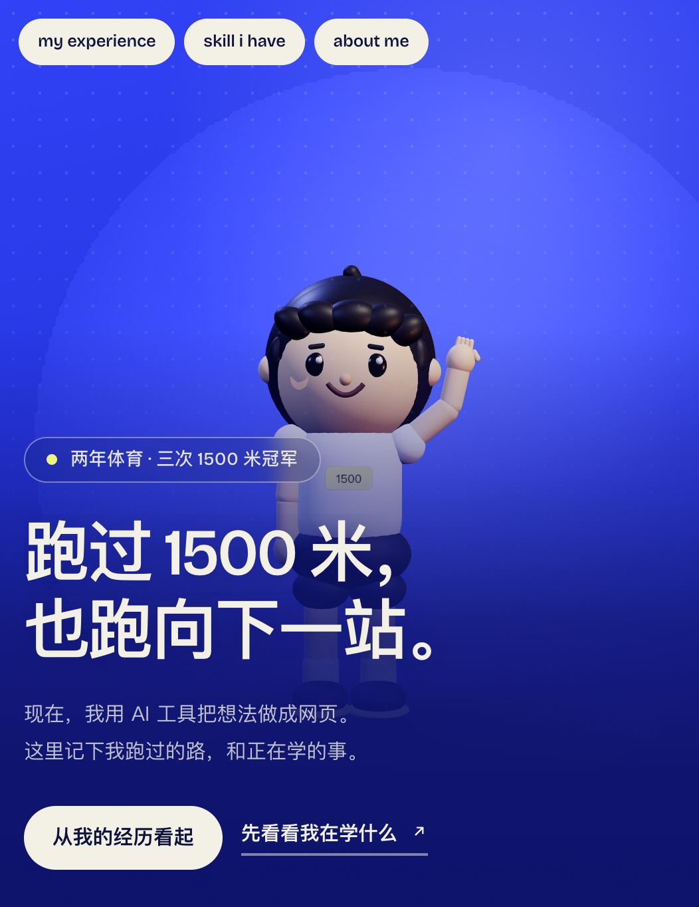

CASE 01 / WEBSITE REBUILD
个人网站重制
01 / 问题
第一版有视觉表达，但目的不够清楚。
旧站以体育和蓝色主视觉为中心，招聘方难以迅速判断岗位方向、代表能力与真实案例。重制不是简单换皮，而是重新安排信息优先级。
02 / 目标
让招聘方先看到匹配度。
- 首屏只保留姓名、AI 工具应用与自动化定位、一句主标题和案例入口。
- 以三个代表案例说明需求拆解、工具应用和交付核对。
- 黑白灰与少量卡布里蓝建立统一视觉，体育大幅降权。
- 使用原创动漫角色代替真人照片，企业名称匿名且不公开手机号。
03 / 对照
从体育叙事，转向工作方式。
左侧为第一版真实截图，右侧为本次静态设计稿的局部构图，不将设计预览描述为已上线网站。

重制前
目的模糊，体育权重过高，岗位信息不集中。
重制设计稿
招聘导向、极简排版、原创动漫角色与真实案例。
04 / 角色系统
让视觉有识别度，但不抢走信息。
3D 定稿采用五束中央刘海、分层背部短发、大眼虹膜和 V 领细节；2D 头像使用同一套视觉语言。首屏只展示背影，关于页使用正面头像。
- 桌面正式网站计划使用 GLB＋Three.js 骨骼动画。
- 当前 HTML／CSS 设计稿使用本地静态角色图，不伪装实时 3D。
- 移动端和减少动态效果模式继续使用静态降级方案。
05 / 验收
设计稿与正式构建分开记录。
本页展示的是可直接打开的静态设计预览。正式网站的构建、路由、实时 3D、Lighthouse 和发布仍需独立验收，不提前宣称上线或测试得分。